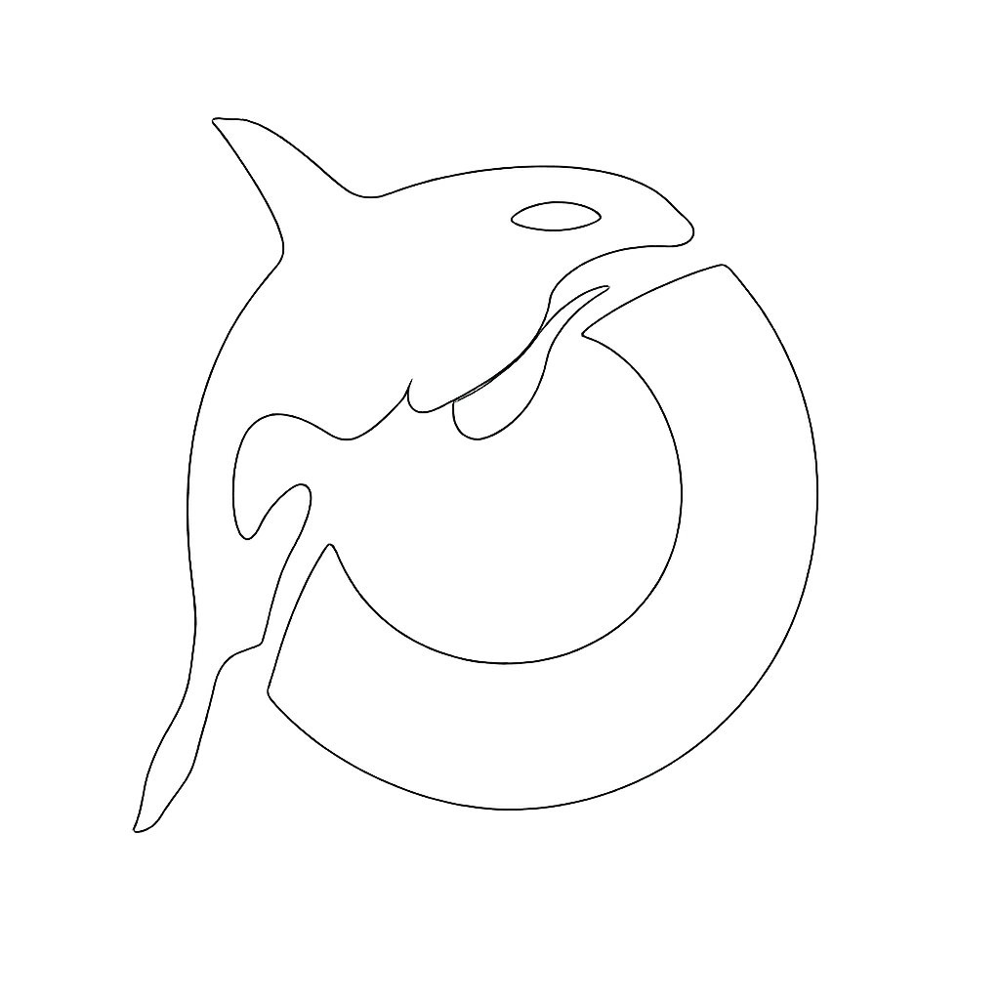

How can Orca help?
Plan, generate, and quality-check — all in one pass.
Define API sources. Each role is assigned to one of these.
Brain drives all current LLM calls. Others are routed in future builds.
Auto-selected by context. Falls back to a core role if unset — hover role name for details.
Required for cloning private repos and higher API rate limits. Needs repo scope.
Model Context Protocol servers extend Orca with additional tools. Changes take effect after Save & re-init.
Local file read/write, terminal execution, and codebase search.
Clone, push, PRs, issues, and repo file access via GitHub API (requires Docker).
Miranda stops spending when this limit is reached.
How many times Orca retries after a QC failure (0 = no repair).
Log LLM calls to miranda-runs.jsonl.
Display quality-check results after each response.
Fetch attached URLs and previous runs, then give Dewey a compact summary.
Use the configured Narrator role once to style progress updates. Standard wording remains the fallback.
Root directory for tool execution (read_file, write_file, etc.). Defaults to the current working directory.
Keeps saved settings and chat history behind a local password. The password stays on this device and is never sent to providers.
Required to change or disable an existing app lock.